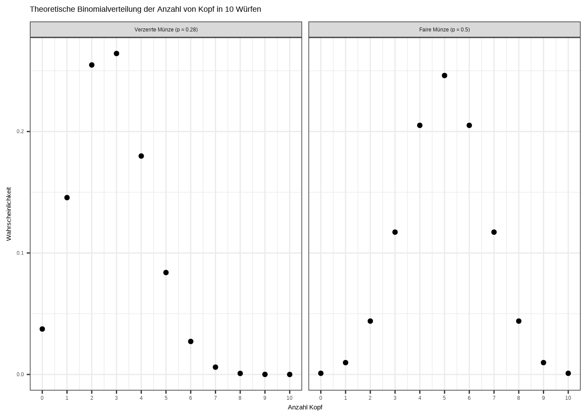
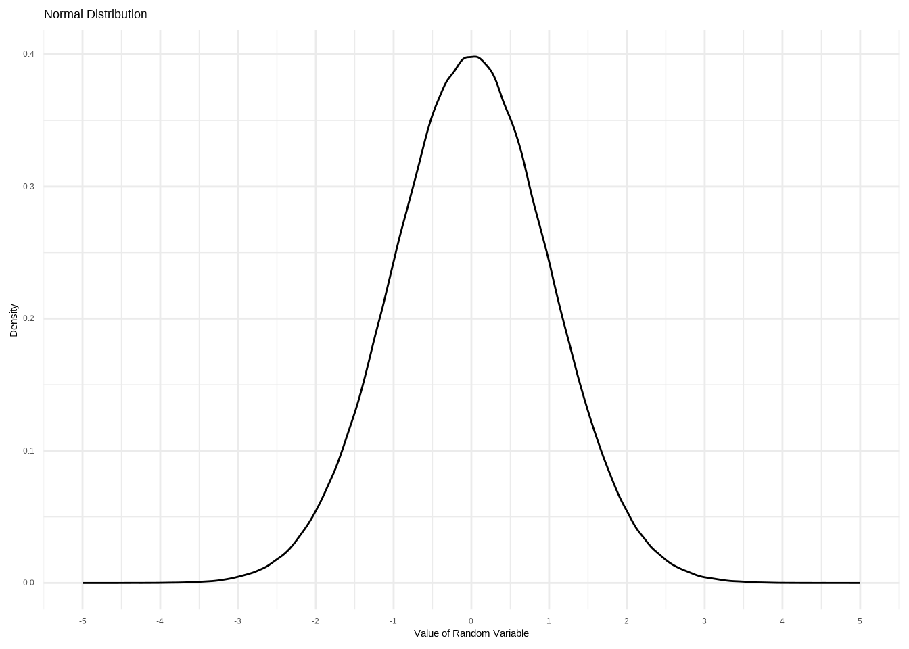
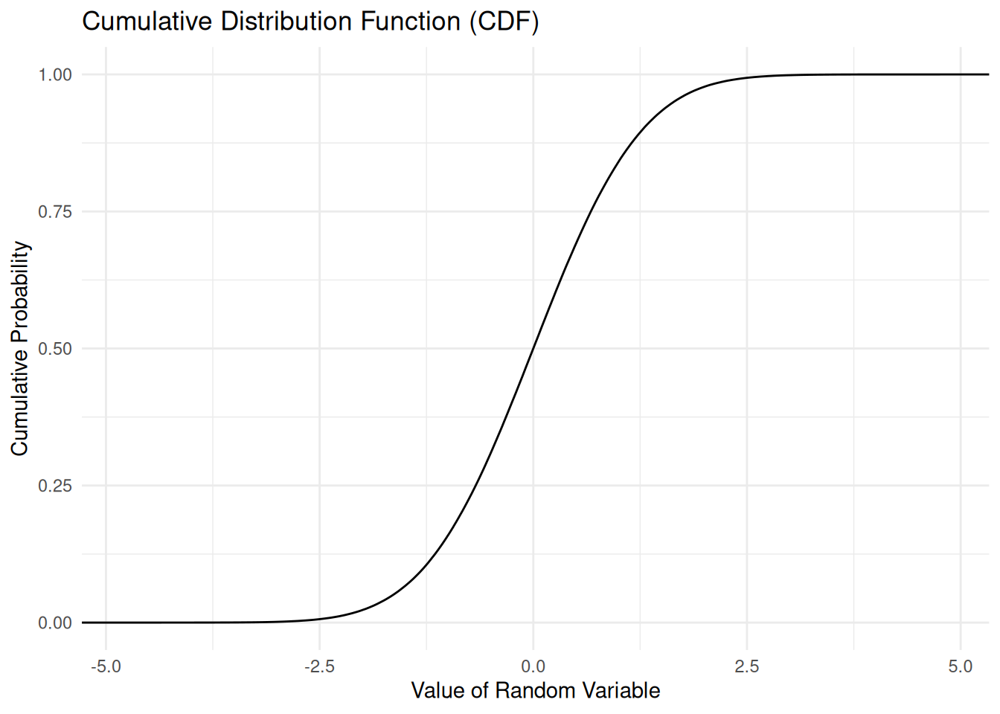
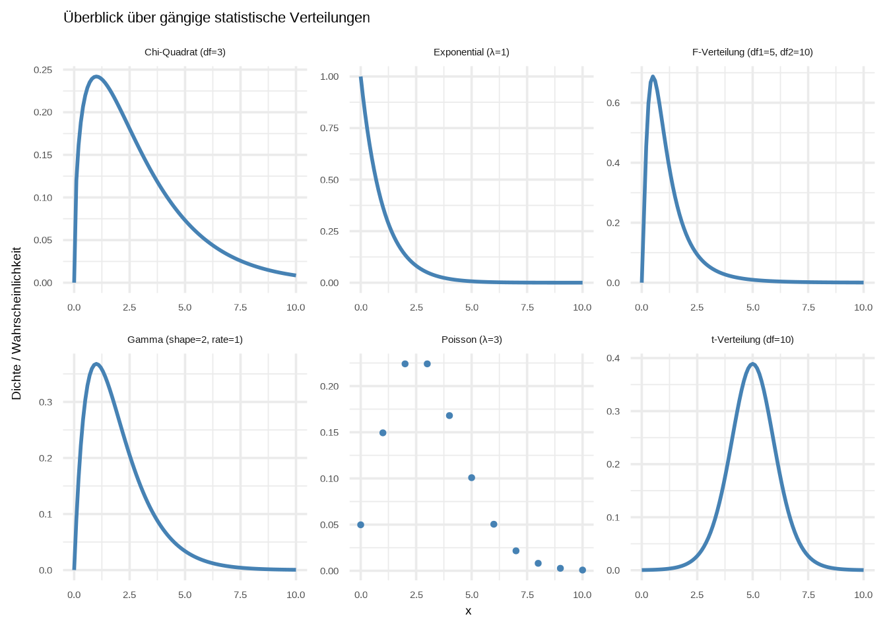
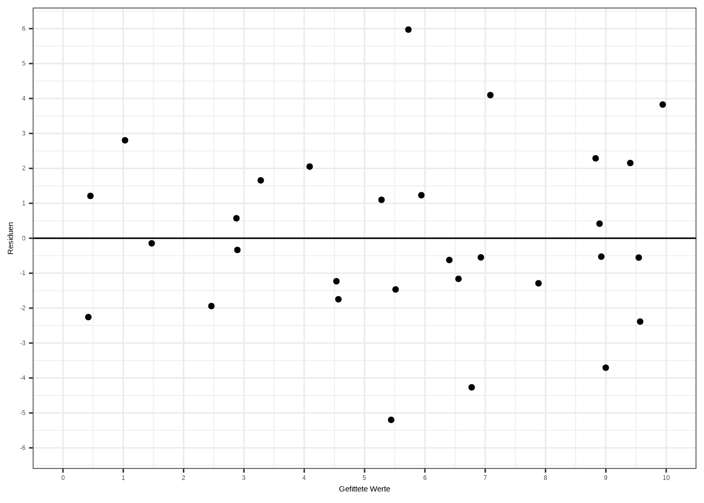
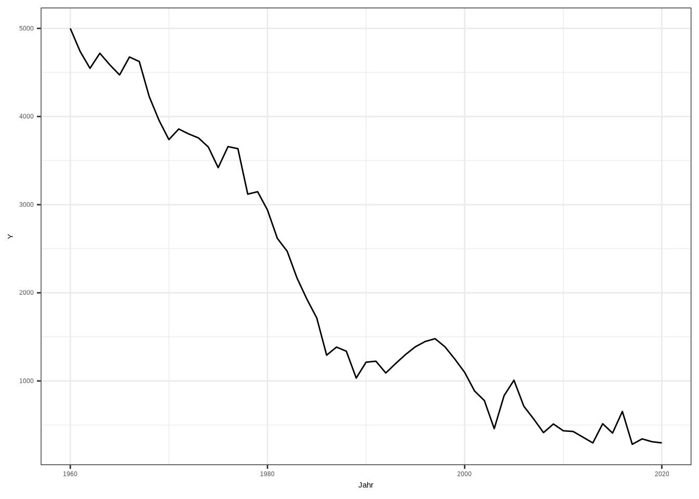

Chapter 7 Weitere Erläuterungen
In diesem Kapitel steigen wir in die Kernstärke von R ein: die Datenanalyse. Nachdem wir unsere Daten bereinigt haben, sind wir bereit zur Analyse – aber es wird immer empfohlen, zunächst mit einer explorativen Datenanalyse einen Überblick über die Daten zu gewinnen. Das hat den Vorteil, dass wir erste Trends und potenzielle Probleme in den Daten erkennen können. Außerdem bekommen wir ein besseres Verständnis des datengenerierenden Prozesses.
Beginnen wir mit dem Laden der Pakete. Ihr werdet feststellen, dass wir viele Pakete laden – das liegt daran, dass R eine statistische Analysesoftware ist und es daher nur natürlich ist, dass Statistiker und Data Scientists, die R verwenden, auch Pakete schreiben, um (1) ihre eigene Arbeit zu erleichtern und (2) R weiterzuentwickeln.
7.1 Funktion definieren (für später)
#Funktion definieren für eine Kable Tabelle
table_ovb <- function(model1, model2) {
# Festlegen der maximalen Nummer die Koeffizienten haben dürfen
max_coef <- max(length(model1$coefficients), length(model2$coefficients))
#Platzhalter für Koeffizienten definieren
place_holder1 <- rep(NA, max_coef)
place_holder2 <- rep(NA, max_coef)
#Platzhalter mit den entsprechenden Zahlen ersetzen
place_holder1[1:length(model1$coefficients)] <- model1$coefficients
place_holder2[1:length(model2$coefficients)] <- model2$coefficients
#Datensatz mit Zahlen aus beiden Modellen
dt <- data.frame(place_holder1,place_holder2)
#Zeilennamen und Spaltennamen
colnames(dt) <- c("Modell ohne Temperatur",
"Modell mit Temperatur")
rownames(dt) <- c("Achsenabschnitt",
"Eiscremeverkäufe", "Temperatur")
#Tabelle anzeigen mit Formatierung
dt %>%
kbl() %>%
kable_styling()
}7.2 Wahrscheinlichkeitstheorie
Bevor wir in die explorative Datenanalyse und lineare Regression eintauchen, lohnt es sich, einen Moment bei der Wahrscheinlichkeitstheorie zu verweilen. Diese ist von entscheidender Bedeutung, da Wahrscheinlichkeit die Grundlage der Statistik bildet: Sie ermöglicht es uns, Aussagen zu treffen, die Unsicherheit einschließen. Anstatt etwas Definitives wie „Es wird morgen regnen” zu sagen, erlaubt uns die Wahrscheinlichkeitstheorie zu sagen: „Es gibt eine 70-prozentige Chance auf Regen morgen.” Das bedeutet, ihr möchtet vielleicht einen Regenschirm mitnehmen – aber es besteht immer noch eine 30-prozentige Chance, dass ihr ihn nicht braucht.
7.2.1 Zufallsvariable
Wir interessieren uns für Daten! Und Daten sind nichts anderes als eine Menge von Zufallsvariablen. Technisch gesehen ist eine Zufallsvariable ein numerisches Ergebnis eines Zufallsprozesses oder Experiments. Informell ausgedrückt: Stellt euch vor, ihr möchtet Daten über eure Familie sammeln. Denkt an alle Familienmitglieder und wählt zufällig einige Informationen über sie aus – ihre Körpergröße, ihr Alter, ihr Geschlecht, ob sie eine Brille tragen, ihre Kochkünste, irgendetwas. Nun müsst ihr nur noch ein System finden, um jedem Merkmal eine Zahl zuzuweisen (z. B. Körpergröße in cm, Alter in Jahren…) – und schon habt ihr eine Zufallsvariable erfasst. Beachtet, dass eine Zufallsvariable das sich gegenseitig ausschließende Ergebnis eines Zufallsprozesses ist.
Einen Würfel werfen und das Ergebnis erhalten könnte eine Zufallsvariable sein. Werfen wir den Würfel und nehmen an, wir bekommen eine 3:
## [1] 3Wir haben nun unsere erste Zufallsvariable erfasst. Eine einzelne Zufallsvariable ist für sich genommen nicht sehr aufschlussreich – aber was, wenn wir nicht eine Zufallsvariable erfassen, sondern zwei? Oder drei? Oder tausend?
7.2.1.1 Diskrete und stetige Variablen
Bevor wir die obige Frage beantworten, müssen wir eine wichtige Unterscheidung zwischen den Typen von Zufallsvariablen treffen:
Eine diskrete Variable kann eine endliche oder abzählbar unendliche Menge von verschiedenen Werten annehmen – in der Regel ganze Zahlen. Diese Werte sind getrennt und können keine Werte dazwischen annehmen. Beispiele: Anzahl der Kinder, Münzwürfe, Anzahl der Tore.
Eine stetige Variable kann jeden Wert innerhalb eines bestimmten Bereichs annehmen, einschließlich Brüche und Dezimalzahlen. Zwischen zwei beliebigen Werten gibt es unendlich viele mögliche Werte. Beispiele: Körpergröße, Gewicht, Temperatur, Zeit.
7.2.1.2 Populations- vs. Stichprobenverteilung
Eine weitere wichtige Unterscheidung, bevor wir mit den Wahrscheinlichkeitsverteilungen fortfahren, ist der Unterschied zwischen Populationen und Stichproben.
Population: Die Population ist die gesamte Gruppe, die wir basierend auf unserer Forschungsfrage theoretisch untersuchen möchten. Wenn wir zum Beispiel die durchschnittliche Körpergröße deutscher Frauen ermitteln wollen, besteht die Population aus allen deutschen Frauen. Der Populationsmittelwert ist die wahre durchschnittliche Körpergröße aller deutschen Frauen.
Stichprobe: Jede deutsche Frau zu befragen (42,3 Millionen laut Statistischem Bundesamt, 2023) wäre natürlich unpraktisch. Stattdessen verwenden wir statistische Stichprobenverfahren, um Daten von einer kleineren, handhabbareren Teilmenge der Population zu erheben. Die Wahrscheinlichkeitstheorie hilft sicherzustellen, dass diese Stichprobe repräsentativ für die gesamte Population ist.
Damit die Stichprobe repräsentativ ist, muss sie zwei wichtige Kriterien erfüllen:
Stichprobengröße: Die Stichprobe muss groß genug sein, um die Merkmale der Population genau widerzuspiegeln.
Zufälligkeit: Jede Person in der Population muss die gleiche Chance haben, für die Stichprobe ausgewählt zu werden. Dies stellt sicher, dass die Stichprobe zufällig und nicht verzerrt ist.
Wenn diese Bedingungen erfüllt sind, können wir die Erkenntnisse aus der Stichprobe auf die größere Population verallgemeinern. Wir berechnen beispielsweise den Stichprobenmittelwert (den Durchschnitt der Stichprobe). Das ist der wahre Wert für die Stichprobe selbst, aber wir verwenden ihn, um einen Rückschluss auf den Populationsmittelwert zu ziehen.
Der Stichprobenmittelwert wird jedoch nicht immer exakt gleich dem Populationsmittelwert sein. Das liegt an der Stichprobenvariabilität – es gibt immer eine gewisse zufällige Variation in der Stichprobe, die zu Abweichungen vom Populationsmittelwert führen kann.
Dennoch: Wenn die Stichprobe groß genug ist und zufällig ausgewählt wurde, wird der Stichprobenmittelwert im Durchschnitt nahe am Populationsmittelwert liegen. Die Differenz zwischen beiden nimmt mit zunehmender Stichprobengröße ab.
Der Unterschied zwischen Population und Stichprobe ist entscheidend und wird im späteren Verlauf dieses Kapitels wichtig sein!
7.2.2 Wahrscheinlichkeitsverteilungen
7.2.2.1 Wahrscheinlichkeitsmassenfunktionen (PMF)
7.2.2.1.1 Gleichverteilungen
Wir können R den Würfel für uns werfen lassen, indem wir die Funktion sample() verwenden. Diese Funktion nimmt den Bereich der möglichen Ergebnisse, die Anzahl der zu ziehenden Beobachtungen und einige zusätzliche Optionen entgegen (um die wir uns hier nicht kümmern müssen):
Dies simuliert das Werfen eines fairen sechsseitigen Würfels 1.000-mal.
Stellen wir das grafisch dar:
# Plot mit ggplot
ggplot(würfel_würfe, aes(x = factor(wurf))) +
geom_bar(fill = "#89CFF0", color = "gray") +
labs(
title = "Verteilung von 1.000 Würfelwürfen",
x = "Würfelseite",
y = "Häufigkeit"
) +
theme_minimal()
Was wir hier erstellt haben, nennt sich Verteilung einer diskreten Variable. Eine diskrete Variable hat eine abzählbare Anzahl von verschiedenen Ergebnissen. In unserem Fall kann der Würfel nur auf einem von sechs Werten landen: 1 bis 6 – nichts dazwischen.
Dieser spezifische Verteilungstyp heißt Gleichverteilung. Eine Gleichverteilung ist eine Verteilung, bei der alle Ergebnisse gleich wahrscheinlich sind. In unserem Fall hat jede Seite des Würfels (1 bis 6) die gleiche Wahrscheinlichkeit. Die Wahrscheinlichkeit eines Ergebnisses beträgt also 1/n, also 1/6 für jedes Ergebnis. Stellen wir auch das grafisch dar:
# Ergebnisse und die entsprechenden Wahrscheinlichkeiten definieren
gleichverteilung <- data.frame(
ergebnis = factor(1:6),
wahrscheinlichkeit = rep(1/6, 6)
)
# Plotten
ggplot(gleichverteilung, aes(x = ergebnis, y = wahrscheinlichkeit)) +
geom_point() +
labs(
title = "Gleichmäßige Wahrscheinlichkeitsverteilung eines fairen Würfels",
x = "Würfelseite",
y = "Wahrscheinlichkeit"
) +
theme_minimal()
Dies ist eine sogenannte Wahrscheinlichkeitsmassenfunktion (PMF). Das ist der Begriff für Wahrscheinlichkeitsverteilungen diskreter Variablen. Sie ist nützlich, da wir damit die Wahrscheinlichkeit eines Ereignisses bestimmen können, zum Beispiel die Wahrscheinlichkeit, eine 3 zu würfeln:
\[ P(X = 3) = \frac{1}{6} \]
Was passiert, wenn wir die Wahrscheinlichkeiten kumulieren, wie in der folgenden Tabelle:
| Ergebnis | 1 | 2 | 3 | 4 | 5 | 6 |
|---|---|---|---|---|---|---|
| Wahrscheinlichkeit | 1/6 | 1/6 | 1/6 | 1/6 | 1/6 | 1/6 |
| Kumulierte Wahrscheinlichkeit | 1/6 | 2/6 | 3/6 | 4/6 | 5/6 | 1 |
Wir können die kumulierte Wahrscheinlichkeit mit der Funktion cumsum() berechnen und plotten:
# Kumulative Summe berechnen
gleichverteilung$cumsum <- cumsum(gleichverteilung$wahrscheinlichkeit)
# Plotten
ggplot(gleichverteilung, aes(x = ergebnis, y = cumsum)) +
geom_point() +
labs(
title = "Kumulative Verteilung eines fairen Würfels",
x = "Würfelseite",
y = "Wahrscheinlichkeit"
) +
ylim(0,1) +
theme_minimal()
Mit diesem Graphen können wir direkt die kumulierte Verteilung für mehrere Ergebnisse ablesen: Die kumulierte Wahrscheinlichkeit für das Ergebnis 3 beträgt 0,5 – also 50 %. Das bedeutet: Mit einer Wahrscheinlichkeit von 50 % erhalte ich entweder 1, 2 oder 3.
7.2.2.1.2 Bernoulli-Verteilungen
In diesem Abschnitt möchte ich euch einen neuen Verteilungstyp vorstellen: die Bernoulli-Verteilung. Sie ist sehr einfach: Sie nimmt den Wert 1 mit der Wahrscheinlichkeit \(p\) und den Wert 0 mit der Wahrscheinlichkeit \(q = 1 - p\) an. Einfacher ausgedrückt beschreibt sie die Ergebnisse eines Experiments, das nur Ja/Nein-Antworten liefert. Das klassische Beispiel ist Kopf oder Zahl – man wirft eine Münze, und sie zeigt entweder Kopf oder Zahl. Simulieren wir Daten und stellen sie grafisch dar:
# 1000 Würfe einer fairen Münze simulieren (1 = Kopf, 0 = Zahl)
set.seed(101) # Reproduzierbarkeit
faire_münze <- data.frame(
ergebnis = factor(rbinom(10, 1, 0.5), levels = c(0, 1),
labels = c("Zahl", "Kopf"))
)
# Ergebnisse plotten
ggplot(faire_münze, aes(x = ergebnis)) +
geom_bar(fill = "#89CFF0", width = 0.35) +
labs(
title = "Simulation von 10 Würfen einer fairen Münze",
x = "Ergebnis",
y = "Häufigkeit"
) +
theme_minimal()
Wie wahrscheinlich erwartet, erhalten wir bei zehn Würfen einer fairen Münze ungefähr 5 Mal Zahl und 5 Mal Kopf. Außerdem haben wir unsere erste Bernoulli-Verteilung geplottet.
Das ist ein Beispiel für eine faire Münze – was wäre, wenn unsere Münze „nicht fair” oder „verzerrt” wäre? Auch das können wir darstellen:
# 10 Würfe einer unfairen Münze simulieren (1 = Kopf, 0 = Zahl)
set.seed(102) # Reproduzierbarkeit
unfaire_münze <- data.frame(
ergebnis = factor(rbinom(10, 1, 0.28), levels = c(0, 1),
labels = c("Zahl", "Kopf"))
)
# Ergebnisse plotten
ggplot(unfaire_münze, aes(x = ergebnis)) +
geom_bar(fill = "#89CFF0", width = 0.35) +
labs(
title = "Simulation von 10 Würfen einer unfairen Münze",
x = "Ergebnis",
y = "Häufigkeit"
) +
theme_minimal()
Wir sehen, dass die Balken nicht gleich hoch sind – die Münze hat eine Tendenz zu Zahl. Die Wahrscheinlichkeit, Zahl zu erhalten, ist bei dieser unfairen Münze höher als die Wahrscheinlichkeit, Kopf zu erhalten.
Wie sieht die Wahrscheinlichkeitsverteilung einer Bernoulli-Verteilung aus? Bevor wir diese Frage beantworten, müssen wir die Wahrscheinlichkeit berechnen, genau 7 Mal Zahl und 3 Mal Kopf zu erhalten. Die Mathematik lassen wir weg – zum Glück kann R das mit der Funktion dbinom() erledigen. Sie nimmt den Parameter x (die Anzahl der erhaltenen Ergebnisse, also Zahl = 7), die Größe (size, die Anzahl der Versuche, also 10) und die Wahrscheinlichkeit (prob, also 0,5 für eine faire Münze) entgegen. Die verzerrte Münze habe ich mit einer Wahrscheinlichkeit von 0,28 simuliert.
Berechnen wir für die faire und die verzerrte Münze die Wahrscheinlichkeit unserer Ergebnisse:
## [1] 0.2460938## [1] 0.2642304Was ihr hier seht, ist die Wahrscheinlichkeit, genau 5 Mal Kopf bei der fairen Münze und 3 Mal Kopf bei der unfairen Münze zu erhalten. Die Wahrscheinlichkeit, genau 5 Mal Kopf mit der fairen Münze zu erhalten, beträgt 24,6 %, und die Wahrscheinlichkeit, genau 3 Mal Kopf mit der verzerrten Münze zu erhalten, beträgt 26,4 %.
7.2.2.1.3 Binomialverteilung
Wie kommt es, dass wir trotz einer berechneten Wahrscheinlichkeit von 50 % für einen Erfolg in jedem Versuch nur eine Wahrscheinlichkeit von 24,6 % für 5 Köpfe bei der fairen Münze und 26,4 % für 3 Köpfe bei der verzerrten Münze erhalten?
Dieses Problem können wir lösen, indem wir eine sogenannte Binomialverteilung plotten. Sie zeigt die Anzahl der Erfolge in einer festen Anzahl von unabhängigen Ja/Nein- bzw. Kopf/Zahl-Versuchen (Bernoulli-Versuche).
Das wird klar, wenn wir alle Wahrscheinlichkeiten für beide Münzen für jedes mögliche Kopf-Ergebnis plotten – also 10, da wir 10 Versuche haben:
# Theoretische Verteilungen erstellen
theoretische_wahr <- data.frame(
köpfe = rep(0:10, 2),
münzen_typ = rep(c("unbiased", "biased"), each = 11),
wahrscheinlichkeit = c(dbinom(0:10, size = 10, prob = 0.5),
dbinom(0:10, size = 10, prob = 0.28))
)
# Plotten
ggplot(theoretische_wahr, aes(x = köpfe, y = wahrscheinlichkeit)) +
geom_point(size = 1.5, color = "black") +
facet_wrap(~ münzen_typ,
labeller = as_labeller(c(
biased = "Verzerrte Münze (p = 0.28)",
unbiased = "Faire Münze (p = 0.5)"))) +
labs(title = "Theoretische Binomialverteilung der Anzahl von Kopf in 10 Würfen",
x = "Anzahl Kopf",
y = "Wahrscheinlichkeit") +
scale_x_continuous(breaks = 0:10) +
theme_bw()
Nun wird der Grund für die Wahrscheinlichkeiten der Kopf-Ergebnisse klar: Die berechnete Wahrscheinlichkeit weicht vom tatsächlichen Ergebnis ab, weil die Versuche in einigen Fällen der berechneten Wahrscheinlichkeit folgen, in anderen jedoch davon abweichen – und Kopf beispielsweise 2 oder 4 Mal bei der verzerrten Münze und 4 oder 6 Mal bei der fairen Münze auftritt.
An diesem Punkt wird eines klar: Die berechnete Wahrscheinlichkeit stellt die erwartete Häufigkeit dar, mit der ein bestimmte Anzahl von Köpfen im Durchschnitt über eine große Anzahl von wiederholten Experimenten auftritt. Warum „im Durchschnitt”? Weil die Wahrscheinlichkeitstheorie die Zufälligkeit berücksichtigt – in jeder einzelnen Simulation (z. B. 10 Münzwürfe) können wir unterschiedliche Ergebnisse beobachten: manchmal 5 Köpfe, manchmal 2, manchmal sogar 9.
Bei einer fairen Münze ist die theoretische Erwartung 5 Köpfe bei 10 Würfen. Das bedeutet jedoch nicht, dass wir immer genau 5 erhalten. Die tatsächlichen Ergebnisse variieren aufgrund des Zufalls. Bei einer verzerrten Münze mit einer Kopf-Wahrscheinlichkeit von 0,28 würden wir im Durchschnitt etwa 2,8 Köpfe erwarten – aber in der Praxis sehen wir nur ganze Zahlen wie 2 oder 3.
Kurz gesagt entstehen diese Abweichungen vom Erwartungswert durch Zufälligkeit. Während die wahre Wahrscheinlichkeit (z. B. 0,5 oder 0,28) das langfristige Muster beschreibt, garantiert sie keine spezifischen Ergebnisse bei kurzen Versuchsreihen. Stattdessen sagt sie uns, was wir am häufigsten bei einer großen Anzahl von Wiederholungen erwarten können.
Dieses Konzept wird später noch einmal wichtig. Aber zunächst schauen wir uns die kumulative Verteilungsfunktion (CDF) der Wahrscheinlichkeitsverteilungsfunktion (PDF) an:
# Kumulative Summe korrekt berechnen: innerhalb jeder Münzgruppe
theoretische_wahr <- theoretische_wahr %>%
group_by(münzen_typ) %>%
arrange(köpfe, .by_group = TRUE) %>%
mutate(cumsum_prob = cumsum(wahrscheinlichkeit)) %>%
ungroup()
# Kumulative Wahrscheinlichkeiten plotten
ggplot(theoretische_wahr, aes(x = köpfe, y = cumsum_prob)) +
geom_point(size = 1.5, color = "black") +
facet_wrap(~ münzen_typ,
labeller = as_labeller(c(
biased = "Verzerrte Münze (p = 0.28)",
unbiased = "Faire Münze (p = 0.5)")),
nrow = 2) +
labs(
title = "Kumulative Verteilung der Anzahl von Kopf in 10 Würfen",
x = "Anzahl Kopf",
y = "Kumulative Wahrscheinlichkeit") +
scale_x_continuous(breaks = 0:10) +
theme_bw()
Die CDF ist recht interessant: Wir sehen, dass bei der verzerrten Münze etwa 70 % aller Experimente in 3 oder weniger Köpfen resultieren. Bei der fairen Münze hingegen enden etwa 80 % der Experimente mit 6 oder weniger Köpfen.
7.2.2.2 Wahrscheinlichkeitsdichtefunktionen (PDF)
7.2.2.2.1 Normalverteilungen
Bisher haben wir uns zwei typische Verteilungen für diskrete Variablen angeschaut. Im Folgenden betrachten wir Verteilungen für stetige Variablen.
Die Wahrscheinlichkeitsverteilungen der Bernoulli-Versuche, die wir zuvor gesehen haben, folgen der Form der wohl wichtigsten Verteilung: der Normalverteilung. Sie wird auch als Gaußsche Verteilung nach ihrem Entdecker Carl-Friedrich Gauss oder aufgrund ihrer Form als Glockenkurve bezeichnet. Schauen wir uns die Wahrscheinlichkeitsdichtefunktion (PDF) an:
# Daten simulieren
set.seed(123)
snd <- data.frame(
stichprobe = rnorm(1000000, mean = 0, sd = 1)
)
# Plotten
ggplot(snd, aes(x = stichprobe)) +
geom_density() +
labs(title = "Normalverteilung",
x = "Wert der Zufallsvariable",
y = "Dichte") +
scale_x_continuous(breaks = -5:5,
limits = c(-5,5)) +
theme_minimal()
Die Normalverteilung hat viele Eigenschaften:
Die Verteilung ist perfekt symmetrisch um den Mittelwert.
Mittelwert, Median und Modus sind gleich.
Die Form ist glockenförmig, mit den meisten Werten um den Mittelwert konzentriert und Ausläufern, die in beide Richtungen abfallen.
Etwa 68 % der Daten liegen innerhalb einer Standardabweichung vom Mittelwert, etwa 95 % innerhalb von zwei Standardabweichungen und etwa 99,7 % innerhalb von drei Standardabweichungen.
Die Verteilung wird durch ihren Mittelwert (\(\mu\)) und ihre Standardabweichung (\(\sigma\)) definiert.
Die Ausläufer erstrecken sich in beide Richtungen unendlich weit, berühren jedoch nie die x-Achse (sie nähern sich asymptotisch null an).
Die Fläche unter der Dichtefunktion stellt die Wahrscheinlichkeit dar und summiert sich auf genau 1. Deshalb sprechen wir von Wahrscheinlichkeitsdichtefunktionen – wir können die Wahrscheinlichkeit für jeden Datenpunkt bestimmen, indem wir die Dichte der Kurve berechnen.
Sie ist unimodal, hat also nur einen Gipfel.
Die Standardnormalverteilung ist ein Sonderfall, bei dem Mittelwert \(\mu\) = 0 und Standardabweichung \(\sigma\) = 1.
Wir haben die kumulative Dichtefunktion bereits bei den Bernoulli-Versuchen gesehen, schauen wir sie uns nochmals an:
# Empirische CDF plotten
ggplot(snd, aes(x = stichprobe)) +
stat_ecdf(geom = "step", color = "black") +
labs(title = "Kumulative Verteilungsfunktion (CDF)",
x = "Wert der Zufallsvariable",
y = "Kumulative Wahrscheinlichkeit") +
theme_minimal()
Mithilfe der kumulativen Verteilungsfunktion (CDF) können wir die Wahrscheinlichkeit bestimmen, dass eine Zufallsvariable einen Wert kleiner oder gleich einem bestimmten Wert annimmt. Bei einer Standardnormalverteilung sagt uns die CDF beispielsweise, dass es eine 50-prozentige Chance gibt, dass die Zufallsvariable einen Wert kleiner oder gleich 0 annimmt.
7.2.2.2.2 Zentraler Grenzwertsatz (ZGS)
In den Beispielen des Kapitels 8.5 verwenden wir Normalverteilungen aufgrund ihrer Bedeutung für Natur- und Sozialwissenschaften. Hier ist der Grund:
Wenn wir Zufallsvariablen wie Körpergröße, IQ, Schneeflockengrößen oder Milchproduktion von Kühen erheben, folgen diese einer Normalverteilung.
Aufgrund ihrer eleganten mathematischen Eigenschaften – wie der Symmetrie um den Mittelwert, der 68-95-99,7-Regel und der Tatsache, dass sie durch nur zwei Parameter (Mittelwert und Standardabweichung) definiert wird.
Viele statistische Modelle setzen eine Normalverteilung voraus, wegen ihrer Einfachheit. Sie ist zum Beispiel der Grundbaustein für maschinelles Lernen, Finanzen und statistische Modelle wie die Regressionsanalyse.
Aber neben diesen, sagen wir „pragmatischen Gründen”, gibt es auch einen mathematischen Grund für ihre häufige Verwendung in der Statistik: den Zentralen Grenzwertsatz. Ich werde nicht auf die Mathematik eingehen, aber er ist recht leicht zu verstehen:
Der Zentrale Grenzwertsatz besagt, dass unter bestimmten Bedingungen die Verteilung der Stichprobenmittelwerte einer großen Anzahl unabhängiger und identisch verteilter Zufallsvariablen eine Normalverteilung approximiert – unabhängig von der Form der ursprünglichen Populationsverteilung. Mit anderen Worten: Mit zunehmender Stichprobengröße nähert sich die Verteilung der Mittelwerte dieser Stichproben immer mehr einer Normalverteilung an.
Visualisieren wir das! Erinnert ihr euch an die Stichprobe unseres Würfels? Was würde passieren, wenn wir sehr viele Stichproben ziehen und ihre Stichprobenmittelwerte erfassen und dann die Stichprobenmittelwerte plotten? Wir würden eine Gleichverteilung erwarten, richtig? Weil jedes Ergebnis die gleiche Wahrscheinlichkeit hat aufzutreten, nämlich genau 1/6.
Ziehen wir Stichproben und schauen, was passiert. Im Folgenden definiere ich zunächst eine Funktion, die den Würfel 1000-mal wirft. Im nächsten Schritt verwende ich die Funktion, um eine Stichprobe zu ziehen. Ich nehme zunächst eine Stichprobe – also 1000 Würfe – und speichere das Ergebnis. Dasselbe mache ich für 2, 3 und 4 Stichproben:
set.seed(123) # Reproduzierbarkeit
# Funktion zur Simulation der Würfelmittelwerte: n_rolls-mal würfeln, n_sim-mal wiederholen
simuliere_würfel_mittelwerte <- function(n_rolls, n_sim = 1000) {
replicate(n_sim, mean(sample(1:6, n_rolls, replace = TRUE)))
}
# Stichprobenmittelwerte für verschiedene Anzahlen von Würfen simulieren
mittelwerte_1 <- simuliere_würfel_mittelwerte(1)
mittelwerte_2 <- simuliere_würfel_mittelwerte(2)
mittelwerte_3 <- simuliere_würfel_mittelwerte(3)
mittelwerte_4 <- simuliere_würfel_mittelwerte(4)
df <- bind_rows(
data.frame(mittelwert = mittelwerte_1, rolls = "1000 Würfe"),
data.frame(mittelwert = mittelwerte_2, rolls = "2000 Würfe"),
data.frame(mittelwert = mittelwerte_3, rolls = "3000 Würfe"),
data.frame(mittelwert = mittelwerte_4, rolls = "4000 Würfe")
)
# Plotten
ggplot(df, aes(x = mittelwert)) +
geom_density(fill = "skyblue", alpha = 0.6) +
facet_wrap(~ rolls, scales = "free", ncol = 2) +
labs(title = "Demonstration des Zentralen Grenzwertsatzes mit Würfelwürfen",
x = "Stichprobenmittelwert",
y = "Dichte") +
scale_x_continuous(breaks = 1:6,
limits = c(1,6)) +
theme_minimal()
Hier können wir deutlich sehen, wie die Verteilung der Stichprobenmittelwerte gegen die Form einer Normalverteilung konvergiert. Das wirft nur noch eine Frage auf: Warum konvergiert der Mittelwert der Stichprobenmittelwerte gegen 3,5?
7.2.2.2.3 Gesetz der großen Zahlen
Das Phänomen, dass der Stichprobenmittelwert gegen 3,5 konvergiert, beruht auf dem Gesetz der großen Zahlen. Es ist ein mathematisches Gesetz, das besagt, dass sich der Stichprobenmittelwert mit zunehmender Stichprobengröße dem Populationsmittelwert annähert. Der wahre Populationsmittelwert für unser Würfelbeispiel ist 3,5 (1+2+3+4+5+6 / 6 = 3,5), also ist unser Erwartungswert gleich dem wahren Populationsmittelwert. Gemäß dem Gesetz der großen Zahlen konvergiert der Stichprobenmittelwert umso mehr gegen 3,5, je öfter der Würfel geworfen wird – und genau das sehen wir im Dichtegraphen rechts unten: Wenn der Würfel insgesamt 4000-mal geworfen wird, nähert sich die Kurve immer mehr dem Stichprobenmittelwert an.
7.2.2.3 Verschiedene Verteilungstypen
Gut, das war viel Theorie – aber sie ist entscheidend, da Wahrscheinlichkeitsverteilungen die Grundlage für die statistischen Modelle zur Datenanalyse bilden. Und das ist der entscheidende Punkt: Die Kenntnis der Verteilungen unserer Daten ermöglicht es uns, die Modelle später entsprechend zu konfigurieren, damit sie besser zu unseren Daten passen! Im nächsten Kapitel wird das hoffentlich klarer werden!
Zum Abschluss dieses Kapitels stelle ich euch kurz verschiedene Verteilungstypen und ihre Interpretationen vor:
# Dataframe mit verschiedenen Verteilungen erstellen
x_werte <- seq(0, 10, by = 0.1)
dist_df <- data.frame(
x = rep(x_werte, 4),
distribution = rep(c("Exponential (λ=1)",
"Gamma (shape=2, rate=1)",
"Chi-Quadrat (df=3)",
"t-Verteilung (df=10)"), each = length(x_werte)),
y = c(
dexp(x_werte, rate = 1),
dgamma(x_werte, shape = 2, rate = 1),
dchisq(x_werte, df = 3),
dt(x_werte - 5, df = 10) # t-Verteilung für bessere Darstellung verschieben
)
)
# Poisson- und F-Verteilung hinzufügen
poisson_werte <- data.frame(
x = 0:10,
y = dpois(0:10, lambda = 3),
distribution = "Poisson (λ=3)"
)
f_werte <- data.frame(
x = x_werte,
y = df(x_werte, df1 = 5, df2 = 10),
distribution = "F-Verteilung (df1=5, df2=10)"
)
# Alle Verteilungen zusammenführen
plot_df <- bind_rows(dist_df, poisson_werte, f_werte)
# Mit facet_wrap plotten
ggplot(plot_df, aes(x = x, y = y)) +
geom_line(data = filter(plot_df, !distribution %in% c("Poisson (λ=3)")),
color = "steelblue", linewidth = 1) +
geom_point(data = filter(plot_df, distribution == "Poisson (λ=3)"),
color = "steelblue", size = 1) +
facet_wrap(~ distribution, scales = "free", ncol = 3) +
labs(title = "Überblick über gängige statistische Verteilungen",
x = "x", y = "Dichte / Wahrscheinlichkeit") +
theme_minimal(base_size = 14)
Gehen wir kurz durch diese Verteilungen und ihre Bedeutungen:
Chi-Quadrat: Diese Verteilung entsteht durch das Quadrieren von Standardnormalwerten. Sie ist grundlegend für Hypothesentests (z. B. den Chi-Quadrat-Test auf Unabhängigkeit) und die Konstruktion von Konfidenzintervallen für Populationsvarianzen.
Exponential: Sie beschreibt die Zeit zwischen zwei unabhängigen Ereignissen in einem Poisson-Prozess. Wesentlich für die Überlebensanalyse und die Modellierung von Wartezeiten.
F-Verteilung: Sie beschreibt das Verhältnis zweier Stichprobenvarianzen aus normalverteilten Populationen. Wird zum Vergleich von Modellanpassungen verwendet.
Gamma: Eine flexible Verteilung, die die Wartezeit bis zum Eintreten mehrerer unabhängiger Ereignisse modelliert. Sie verallgemeinert die Exponentialverteilung und wird häufig in der Bayes’schen Statistik, der Zuverlässigkeitstechnik und der Versicherungsmodellierung verwendet.
Poisson: Modelliert die Anzahl der Ereignisse, die in einem festen Zeit- oder Raumintervall auftreten, wenn Ereignisse unabhängig mit einer konstanten Durchschnittsrate eintreten – zum Beispiel die Anzahl der E-Mails pro Stunde. Wird häufig für Zähldaten und ereignisbasierte Modellierung verwendet.
t-Verteilung: Wird verwendet, wenn der Mittelwert einer normalverteilten Population bei kleinen Stichproben geschätzt wird. Sie berücksichtigt die erhöhte Unsicherheit durch die Schätzung der Standardabweichung. Wesentlich für Hypothesentests und Regressionsanalysen.
7.2.3 Arbeiten mit Verteilungen
Nach dem eher theoretischen Teil davor arbeiten wir nun praktisch mit Verteilungen in R. Dazu simulieren wir Daten. Für den folgenden Teil simuliere ich eine Normalverteilung und stelle euch die erste zentrale Funktion rnorm() vor. Diese Funktion nimmt drei Argumente entgegen: die Anzahl der Beobachtungen n, den Mittelwert (mean) und die Standardabweichung (sd). Und wieder zeigt sich die Eleganz der Normalverteilung: Wir müssen R nicht mehr mitteilen als das, da Normalverteilungen allein durch Mittelwert und Standardabweichung erzeugt werden können – zusätzlich können wir die Anzahl der Beobachtungen festlegen.
Wir simulieren die Normalverteilung für den IQ. Der Mittelwert sei 100 und die Standardabweichung 15. Diese Werte sind nicht zufällig gewählt – die meisten IQ-Stichproben ergeben diesen Mittelwert und diese Standardabweichung:
# Seed für Reproduzierbarkeit setzen
set.seed(123)
# Stichprobe simulieren
sticprobe_iq <- data.frame(
größe = rnorm(10000, mean = 100, sd = 15))
# Plotten
ggplot(sticprobe_iq, aes(x=größe)) +
geom_density(linewidth = 1, color = "#E35335") +
labs(
x = "IQ",
y = "Häufigkeit"
) +
scale_x_continuous(breaks = seq(40, 160, 20),
limits = c(40, 160)) +
theme_minimal()
7.2.3.1 Die 68-95-99,7-Regel
Erinnert ihr euch an diese Regel? Ohne komplizierte Mathematik können wir bestimmen, wo die meisten Werte liegen – einfach indem wir die Standardabweichung vom Mittelwert subtrahieren:
68 % aller Werte liegen innerhalb einer Standardabweichung vom Mittelwert:
\[ \mu + \sigma = 100 + 15 = 115 \]
\[ \mu - \sigma = 100 - 15 = 85 \]
Wir können diese Werte wie folgt interpretieren: Wenn euer IQ zwischen 85 und 115 liegt, teilt ihr das Schicksal von 68 % unserer Stichprobe.
95 % aller Werte liegen innerhalb von zwei Standardabweichungen vom Mittelwert:
\[ \mu + 2\sigma = 100 + 2 \cdot 15 = 130 \]
\[ \mu - 2\sigma = 100 - 2 \cdot 15 = 70 \]
Wenn ein IQ nicht zwischen 70 und 130 liegt, gehört er entweder zu den 2,5 % niedrigsten oder den 2,5 % höchsten Werten. Ein IQ unter 70 bedeutet, zu den 2,5 % mit den niedrigsten IQ-Werten zu gehören. Ein IQ über 130 hingegen bedeutet, einen höheren IQ als 97,5 % aller Menschen zu haben!
99,7 % aller Werte liegen innerhalb von drei Standardabweichungen vom Mittelwert:
\[ \mu + 3\sigma = 100 + 3 \cdot 15 = 145 \]
\[ \mu - 3\sigma = 100 - 3 \cdot 15 = 55 \]
Wenn ein IQ-Wert außerhalb von 145 oder 55 liegt, gehört er entweder zu den obersten 0,15 % oder, wenn er unter 55 liegt, zu den untersten 0,15 %.
7.2.3.2 Die Wahrscheinlichkeit einzelner Werte bestimmen
Die 68-95-99,7-Regel ist eine hilfreiche Faustregel zum Verständnis von Normalverteilungen. Sie ist jedoch nicht sehr präzise. Wenn wir die genaue Wahrscheinlichkeit eines Werts in unserer Verteilung bestimmen möchten, müssen wir die Wahrscheinlichkeitsdichtefunktion (PDF) der Normalverteilung verwenden.
Da eine stetige Verteilung unendlich viele mögliche Werte hat, ist die Wahrscheinlichkeit, irgendeinen exakten Wert zu beobachten (wie genau 100), tatsächlich null. Deshalb arbeiten wir mit Wahrscheinlichkeitsdichten statt mit exakten Wahrscheinlichkeiten an einem einzelnen Punkt.
Statt zu fragen „Was ist die Wahrscheinlichkeit von genau 100?” fragen wir: „Wie hoch ist die Dichte bei 100?” – die widerspiegelt, wie wahrscheinlich es ist, Werte um 100 herum zu beobachten.
In R können wir die Funktion dnorm() verwenden, um diese Dichte zu berechnen. Sie nimmt drei Argumente entgegen:
x: der interessierende Wert
mean: der Mittelwert der Verteilung
sd: die Standardabweichung
Berechnen wir die Wahrscheinlichkeit, einen IQ von genau 100, 87 und 140 zu haben:
## [1] 0.02659615## [1] 0.0182691## [1] 0.0007597324Die Wahrscheinlichkeit, einen IQ von 100 zu haben, beträgt 2,6 %, einen IQ von 87 zu haben 1,8 % und einen IQ von 140 zu haben 0,07 %.
7.2.3.3 Wahrscheinlichkeiten bis zu einem bestimmten Wert ermitteln
Die Funktion pnorm() in R gibt die kumulative Wahrscheinlichkeit bis zu einem bestimmten Wert unter der Normalverteilung zurück. Einfacher ausgedrückt: Sie sagt uns, wie wahrscheinlich es ist, dass ein aus einer Normalverteilung gezogener Wert kleiner oder gleich einer bestimmten Zahl ist.
Sie nimmt folgende Argumente entgegen:
q: der interessierende Wert (das Quantil)mean: der Mittelwert (μ) der Verteilungsd: die Standardabweichung (σ) der Verteilung
## [1] 0.5## [1] 0.1930623## [1] 0.9961696Was bedeuten diese Werte? Die Interpretation ist recht einfach: 0,5 bedeutet, dass ein IQ von 100 höher ist als 50 % unserer Verteilung. Mit anderen Worten: Eine Person mit einem IQ von 100 hat einen höheren IQ als 50 % aller anderen Menschen. Eine Person mit einem IQ von 87 hat einen IQ, der höher ist als 19,3 % der Stichprobe/Population. Bei einem IQ von 140 hat die Person einen höheren IQ als 99,6 % aller anderen Personen in der Stichprobe. Anders ausgedrückt: Mit einem IQ von 140 gehört eine Person zur obersten 1 %.
Was, wenn wir wissen möchten, welchen Wert wir benötigen, um in einem bestimmten Perzentil zu sein? Dafür bietet R die Funktion qnorm().
- Sie nimmt das Argument p entgegen, das die gewünschte Wahrscheinlichkeit enthält, sowie unsere beiden Parameter Mittelwert und Standardabweichung.
## [1] 100## [1] 87## [1] 140Wir sehen, dass wir unsere zuvor geschätzten Werte zurückbekommen. Diese Funktion ist besonders nützlich, wenn Schwellenwerte festgelegt werden sollen (z. B. welcher IQ benötigt wird, um als „Genie” zu gelten) oder Grenzwerte bei standardisierten Tests bestimmt werden müssen.
7.2.3.4 Fazit
Damit schließen wir unser Kapitel zur Wahrscheinlichkeitstheorie ab. Wir haben verschiedene Variablentypen untersucht, Wahrscheinlichkeitsmassenfunktionen (PMFs) und Wahrscheinlichkeitsdichtefunktionen (PDFs) kennengelernt und schließlich gesehen, wie man mit Wahrscheinlichkeitsverteilungen in R arbeitet.
Auf den ersten Blick mag das wie reine Theorie wirken. Ein solides Verständnis von Verteilungen ist jedoch unerlässlich: Es ermöglicht uns, Fehler bei der Erstellung statistischer Modelle zu erkennen und zu korrigieren, die häufig auf Verteilungsannahmen basieren.
Darüber hinaus zeigt uns das Verständnis von Verteilungen, warum statistische Analyse überhaupt funktioniert – auch angesichts von Unsicherheit. Es ermöglicht uns, Wahrscheinlichkeiten für Vorhersagen zuzuweisen, Ergebnisse sinnvoll zu interpretieren und zu quantifizieren, wie wahrscheinlich bestimmte Ergebnisse sind.
7.3 Regressionsdiagnostik
7.3.1 Modellgüte: Bivariate Regression
Die lineare Regression hat viele Annahmen – wir können das Modell nicht einfach immer so anwenden, wie wir möchten. Da es sich um ein Modell handelt, trifft es Annahmen, und anstatt diese einfach als gegeben vorauszusetzen, können wir sie testen. Die Techniken zum Testen dieser Annahmen werden als Maße der Modellgüte bezeichnet, da sie testen, wie gut unsere Daten zum Modell passen. Schauen wir uns die Annahmen und die Möglichkeiten zu ihrer Überprüfung an:
7.3.1.1 Maße der Modellgüte
7.3.1.1.1 Residuen
1.) Residuen berechnen:
\[ \text{Residuen} = y_i - \hat{y_i} = y_i - (\hat{\beta_0} + \hat{\beta_1}x_i) \]
dabei gilt:
\(y_i\) = unsere tatsächlich beobachteten Werte der abhängigen Variable (
df$y)\(\hat{y_i}\) = unsere vorhergesagten Werte basierend auf unserem OLS-Schätzer
Erinnert euch an den Graphen in Abschnitt 2.2.1 – die Residuen sind im Grunde die roten Linien, also der Abstand von der Geraden zum Punkt. Wir können die Residuen für unsere Daten berechnen:
# Daten abrufen
set.seed(123) # Reproduzierbarkeit
n <- 30
x <- runif(n) * 10
kategorische_variable <- factor(sample(c(0, 1), n, replace = TRUE))
y <- 0.8 + 1.6 * x + rnorm(n, 0, 3)
df <- data.frame(x, y, kategorische_variable)
# Unser Modell
model1 <- lm(y ~ x,
data = df) # Zunächst berechnen wir die Vorhersagen für y
df$y_dach <- 1.6821 + 1.5394*df$x
# Residuen durch Subtraktion von y_hat von y berechnen
df$residuen <- df$y - df$y_dach
# Überprüfung
head(df) ## x y kategorische_variable y_dach
## 1 2.875775 6.680633 0 6.109068
## 2 7.883051 12.527668 1 13.817269
## 3 4.089769 10.029008 0 7.977891
## 4 8.830174 17.562679 1 15.275270
## 5 9.404673 18.312220 1 16.159653
## 6 0.455565 3.594825 0 2.383397
## residuen
## 1 0.5715646
## 2 -1.2896015
## 3 2.0511170
## 4 2.2874090
## 5 2.1525664
## 6 1.2114280# Das hätten wir auch automatisch mit R machen können!
df$residuen_auto <- residuals(model1)
# Überprüfung
head(df)## x y kategorische_variable y_dach
## 1 2.875775 6.680633 0 6.109068
## 2 7.883051 12.527668 1 13.817269
## 3 4.089769 10.029008 0 7.977891
## 4 8.830174 17.562679 1 15.275270
## 5 9.404673 18.312220 1 16.159653
## 6 0.455565 3.594825 0 2.383397
## residuen residuen_auto
## 1 0.5715646 0.5716538
## 2 -1.2896015 -1.2892991
## 3 2.0511170 2.0512579
## 4 2.2874090 2.2877518
## 5 2.1525664 2.1529337
## 6 1.2114280 1.2114141Schauen wir uns einen sogenannten Residualplot an: Auf der x-Achse werden die gefitteten Werte geplottet, also unser y_hat. Auf der y-Achse werden die Residuen dargestellt, also \(y - \hat{y}\). Dann wird eine horizontale Linie bei y = 0 eingezeichnet. Alle Punkte auf dieser Linie zeigen uns die vom Modell korrekt vorhergesagten Werte.
ggplot(df, aes(x, residuen_auto)) +
geom_point() +
geom_hline(yintercept = 0) +
scale_y_continuous("Residuen", seq(-6, 6, 1),
limits = c(-6, 6)) +
scale_x_continuous("Gefittete Werte", seq(0, 10, 1),
limits = c(0, 10)) +
theme_bw()
7.3.1.1.2 Homoskedastizität und Heteroskedastizität
Eine Annahme der linearen Regression ist, dass die Varianz des Fehlerterms nicht mit unserer unabhängigen Variable korreliert. Das klingt technisch und bedeutet im Grunde, dass die Residuen gleichmäßig über die unabhängigen Variablen verteilt sein sollten. Stellen wir das grafisch dar, um ein visuelles Verständnis zu bekommen:
# Seed für Reproduzierbarkeit setzen
set.seed(123)
# Daten generieren
x <- runif(150, 0.05, 1)
e <- rnorm(150, 0, 0.5)
# Homoskedastische Daten
y_homo <- 2 * x + e
# Heteroskedastische Daten
y_hetero <- 2 * x + e*x^2
# Dataframe mit beiden Datensätzen erstellen
df_homo_hetero <- data.frame(x, y_homo, y_hetero)
# Streudiagramm mit Homoskedastizität
homoskedastischer_plot <- ggplot(df_homo_hetero, aes(x = x, y = y_homo)) +
geom_point() +
geom_smooth(method = "lm", se = FALSE) + # Regressionsgerade hinzufügen
scale_y_continuous("Y", seq(-0.5, 3.5, 0.5), limits = c(-0.5, 3.5)) +
labs(title = "Homoskedastischer Plot") +
theme_minimal()
# Streudiagramm mit Heteroskedastizität
heteroskedastischer_plot <- ggplot(df_homo_hetero,
aes(x = x, y = y_hetero)) +
geom_point() +
geom_smooth(method = "lm", se = FALSE) + # Regressionsgerade hinzufügen
labs(title = "Heteroskedastischer Plot") +
scale_y_continuous("Y", seq(-0.5, 3.5, 0.5), limits = c(-0.5, 3.5)) +
theme_minimal()
# Plots kombinieren
facet_plots <- ggarrange(homoskedastischer_plot, heteroskedastischer_plot, nrow = 1)
# Kombinierte Plots ausgeben
print(facet_plots)
Im linken Plot sehen wir die homoskedastischen Daten. Die Punkte sind gleichmäßig und konstant um die Regressionsgerade verteilt. Im rechten Plot hingegen sehen wir, dass je mehr die unabhängige Variable x zunimmt, desto mehr streuen die Beobachtungen. Die Punkte sind nicht konstant um die Gerade verteilt. Wenn die Daten heteroskedastisch sind, ist das ein Problem. Man könnte versuchen, die unabhängige Variable durch Logarithmierung zu transformieren (dazu kommen wir später). Alternativ gibt es sogenannte heteroskedastische Regression – das ist jedoch ein fortgeschrittenes Modell.
7.3.1.2 TSS, ESS und \(R^2\)
Nun, da wir die Residuen haben, können wir die Gesamtquadratsumme (TSS), die erklärte Quadratsumme (ESS) und das \(R^2\) berechnen:
TSS (Variation in der AV): \(TSS = \sum(y_i - \bar{y})^2\) – Wir subtrahieren unsere tatsächlichen Werte (
df$y) von ihrem Mittelwert und quadrieren das Ergebnis, um negative Zahlen zu vermeiden. Das ergibt die Gesamtvariation unserer abhängigen Variablen.ESS (Variation der AV, die wir erklären): \(ESS = \sum(\hat{y_i} - \bar{y})^2\) – Hier verwenden wir unsere vorhergesagten Werte (
df$y_hat) statt der tatsächlichen Werte. Das ergibt die Variation in der abhängigen Variablen, die wir mit unserem Modell erklären können.\(R^2\) (Der Anteil der Variation, den unser Modell vorhersagen kann): \(R^2 = \frac{ESS}{TSS}\) – Um den Anteil zu erhalten, dividieren wir einfach die erklärte Variation durch die Gesamtvariation der AV. Wenn beide Werte gleich sind – unser Modell also die gesamte Variation der abhängigen Variablen vorhersagt – beträgt \(R^2\) = 1. Wenn unser Modell nichts erklären kann, beträgt die erklärte Variation 0. Berechnen wir die Werte:
# Gesamtquadratsumme
tss <- sum((df$y - mean(df$y))^2)
# Erklärte Quadratsumme
ess <- sum((df$y_dach - mean(df$y))^2)
# R-Quadrat berechnen
r_quadriert <- ess/tss
# Ausgabe
r_quadriert## [1] 0.7631199## [1] 0.76307777.3.1.3 Einflussreiche Ausreißer
Ausreißer sind extrem abweichende Werte, die unsere Analyse beeinflussen und verzerren können. Daher müssen wir prüfen, ob unsere Daten solche Werte enthalten. Schauen wir zunächst, wie sie unsere Daten beeinflussen können:
# Seed setzen
set.seed(069)
# Fake-Daten mit Ausreißer generieren
x1 <- sort(runif(10, min = 30, max = 70))
y1 <- rnorm(10, mean = 200, sd = 50)
y1[9] <- 2000
daten_ausreißer <- data.frame(x1, y1)
# Modell mit Ausreißer
model_ausreißer <- lm(y1 ~ x1)
# Modell ohne Ausreißer
model_ohne_ausreißer <- lm(y1[-9] ~ x1[-9])
# Daten plotten
ggplot(daten_ausreißer, aes(x = x1, y = y1)) +
geom_point(shape = 20, size = 3) +
# Regressionsgerade mit Ausreißer
geom_abline(aes(slope = model_ausreißer$coefficients[2],
intercept = model_ausreißer$coefficients[1],
color = "Modell mit Ausreißer"),
linewidth = 0.75, show.legend = TRUE) +
# Regressionsgerade ohne Ausreißer
geom_abline(aes(slope = model_ohne_ausreißer$coefficients[2],
intercept = model_ohne_ausreißer$coefficients[1],
color = "Modell ohne Ausreißer"), linewidth = 0.75,
show.legend = TRUE) +
xlab("Unabhängige Variable") +
theme_classic() +
theme(legend.position = c(0.15,0.9),
legend.title = element_blank()) 
Wir sehen, dass diese eine Beobachtung unsere Stichprobe vollständig verzerrt. Aber wie finden wir heraus, welche Beobachtung ein einflussreicher Ausreißer ist? Dafür können wir die Cook’s Distance verwenden. Berechnen und plotten wir sie in R:
# Cook's Distance kann mit einer eingebauten Funktion berechnet werden
daten_ausreißer$cooks_distance <- cooks.distance(model_ausreißer)
# Plotten
ggplot(daten_ausreißer, aes(x = x1, y = cooks_distance)) +
geom_point(colour = "darkgreen", size = 3, alpha = 0.5) +
labs(y = "Cook's Distance", x = "Unabhängige Variable") +
geom_hline(yintercept = 1, linetype = "dashed") +
theme_bw()
Wir können deutlich sehen, dass die Cook’s Distance den Ausreißer erkannt hat. Die Regel lautet: Werte mit einer Cook’s Distance größer als 1 müssen eliminiert werden. Das kann mit der Funktion filter() erfolgen, woraufhin das Modell ohne die Ausreißer erneut berechnet wird.
7.3.1.4 Funktionsform
Zunächst laden wir unsere Daten:
# Weitere Daten simulieren
X_quadratisch <- X <- runif(50, min = -5, max = 5)
u <- rnorm(50, sd = 1)
# Wahre Beziehung
Y_quadratisch <- X^2 + 2 * X + u
# Dataframe erstellen
df2 <- data.frame(X_quadratisch, Y_quadratisch)Lineare Regression ist ein mathematisches Modell und basiert daher auf Annahmen. Wir sollten diese Annahmen nicht einfach voraussetzen, sondern testen! Eine Annahme ist, dass eine lineare Beziehung zwischen X und Y vorliegt. Das kann jedoch problematisch sein – betrachten wir folgendes Beispiel:
# Einfaches Regressionsmodell schätzen
model_einfach <- lm(Y_quadratisch ~ X_quadratisch, data = df2)
# Zusammenfassung ausgeben
summary(model_einfach)##
## Call:
## lm(formula = Y_quadratisch ~ X_quadratisch, data = df2)
##
## Residuals:
## Min 1Q Median 3Q Max
## -8.703 -6.508 -1.478 5.277 17.464
##
## Coefficients:
## Estimate Std. Error t value Pr(>|t|)
## (Intercept) 7.5912 1.0914 6.955 8.61e-09 ***
## X_quadratisch 2.0220 0.3948 5.122 5.32e-06 ***
## ---
## Signif. codes: 0 '***' 0.001 '**' 0.01 '*' 0.05 '.' 0.1 ' ' 1
##
## Residual standard error: 7.709 on 48 degrees of freedom
## Multiple R-squared: 0.3534, Adjusted R-squared: 0.3399
## F-statistic: 26.23 on 1 and 48 DF, p-value: 5.321e-06# Plotten
ggplot(df2, aes(x = X_quadratisch, y = Y_quadratisch)) +
geom_point(shape = 20, size = 3) +
geom_smooth(method = "lm", se = FALSE) +
theme_bw()## `geom_smooth()` using formula = 'y ~ x'
Wie man sieht, stimmt hier etwas nicht. Es scheint eine Korrelation zwischen den beiden Variablen zu geben, aber sie sieht nicht linear aus. In einem solchen Fall ist es sinnvoll, die unabhängige Variable zu quadrieren und die Regression erneut durchzuführen:
# Quadratisches Regressionsmodell schätzen
model_quadratisch <- lm(Y_quadratisch ~ X_quadratisch^2,
data = df2)
# Zusammenfassung ausgeben
summary(model_quadratisch)##
## Call:
## lm(formula = Y_quadratisch ~ X_quadratisch^2, data = df2)
##
## Residuals:
## Min 1Q Median 3Q Max
## -8.703 -6.508 -1.478 5.277 17.464
##
## Coefficients:
## Estimate Std. Error t value Pr(>|t|)
## (Intercept) 7.5912 1.0914 6.955 8.61e-09 ***
## X_quadratisch 2.0220 0.3948 5.122 5.32e-06 ***
## ---
## Signif. codes: 0 '***' 0.001 '**' 0.01 '*' 0.05 '.' 0.1 ' ' 1
##
## Residual standard error: 7.709 on 48 degrees of freedom
## Multiple R-squared: 0.3534, Adjusted R-squared: 0.3399
## F-statistic: 26.23 on 1 and 48 DF, p-value: 5.321e-06# Plotten
ggplot(df2, aes(x = X_quadratisch, y = Y_quadratisch)) +
geom_point(shape = 20, size = 3) +
geom_smooth(method = "lm", formula = y ~ poly(x, 2),
color = "red",
se = FALSE) +
scale_x_continuous("X", breaks = seq(-5,5,1),
limits = c(-5,5)) +
ylab("Y") +
theme_bw()
Das sieht besser aus und ist die richtige Methode, um quadratische Beziehungen in der linearen Regression zu behandeln. Daten können jedoch nicht nur eine quadratische Form annehmen – sie könnten auch die Form einer Wurzelfunktion haben. Ich zeige das am klassischsten Beispiel einer solchen Funktionsform. Der gapminder-Datensatz wird geladen. Er enthält Daten zur durchschnittlichen Lebenserwartung (lifeExp) und zum BIP pro Kopf (gdpPercap) verschiedener Länder in verschiedenen Jahren. Untersuchen wir, ob das BIP pro Kopf mit der Lebenserwartung korreliert:
## # A tibble: 6 × 6
## country continent year lifeExp pop gdpPercap
## <fct> <fct> <int> <dbl> <int> <dbl>
## 1 Afghanistan Asia 1952 28.8 8425333 779.
## 2 Afghanistan Asia 1957 30.3 9240934 821.
## 3 Afghanistan Asia 1962 32.0 10267083 853.
## 4 Afghanistan Asia 1967 34.0 11537966 836.
## 5 Afghanistan Asia 1972 36.1 13079460 740.
## 6 Afghanistan Asia 1977 38.4 14880372 786.# Plotten
ggplot(gapminder, aes(gdpPercap, lifeExp)) +
geom_point() +
geom_smooth(method = "loess", se = FALSE) +
scale_y_continuous("Lebenserwartung", seq(30, 80, 10),
limits = c(30, 80)) +
theme_bw()## `geom_smooth()` using formula = 'y ~ x'
Das sieht nicht gut aus. Was können wir tun? Ich habe bereits erwähnt, dass die gefittete Linie wie eine Wurzelfunktion (\(y = \beta\sqrt{x}\)) aussieht. Wenn man den Logarithmus der Wurzel nimmt, hebt sich die Wurzel auf und nur x bleibt übrig: \(\log{(\sqrt{x})} = x\). Die Funktionsform ändert sich dann zu \(y = \beta x\) – und das ist genau die systematische Komponente, die wir anstreben:
ggplot(gapminder, aes(log(gdpPercap), lifeExp)) +
geom_point() +
geom_smooth(method = "lm", se = FALSE) +
scale_y_continuous("Lebenserwartung", seq(30, 80, 10),
limits = c(30, 80)) +
xlab("BIP pro Kopf") +
theme_bw()## `geom_smooth()` using formula = 'y ~ x'
Das sieht schon eher nach dem aus, was wir anstreben. Was können wir in diesem Plot erkennen? Wenn wir ein Modell berechnen, sollten wir den Logarithmus der unabhängigen Variable nehmen, wenn wir Folgendes erwarten: Die meisten Beobachtungen einer Variable sind niedrig, aber einige Beobachtungen sind extrem hoch. In unserem Beispiel haben die meisten Länder ein niedriges BIP pro Kopf, aber einige Länder – wie westeuropäische Länder oder die USA – haben ein so hohes BIP pro Kopf, dass sie die Funktionsform der gefitteten Linie verändern. Das sind einflussreiche Ausreißer, aber es sind zu viele, um sie zu löschen. Das würde die Repräsentativität der Stichprobe verzerren. Daher können wir mit ihnen umgehen, indem wir den Logarithmus nehmen.
7.3.1.5 Unabhängige Beobachtungen
Eine weitere Annahme des linearen Regressionsmodells ist die Annahme unabhängiger, identisch verteilter Beobachtungen (i.i.d.). Das klingt kompliziert, ist es aber nicht. Betrachten wir folgenden Plot:
# Daten abrufen
set.seed(123)
# Datumsvektor generieren
datum <- seq(as.Date("1960/1/1"), as.Date("2020/1/1"), "years")
# Beschäftigungsvektor initialisieren
y_zeit <- c(5000, rep(NA, length(datum)-1))
# Zeitreihenbeobachtungen mit zufälligen Einflüssen generieren
for (i in 2:length(datum)) {
y_zeit[i] <- -50 + 0.98 * y_zeit[i-1] +
rnorm(n = 1, sd = 200)
}
# Plotten
df_zeitreihe <- data.frame(y_zeit, datum)
ggplot(df_zeitreihe, aes(datum, y_zeit)) +
geom_line() +
ylab("Y") +
xlab("Jahr") +
theme_bw() 
Wenn wir den Plot betrachten: Können wir davon ausgehen, dass die Beobachtung für das Jahr 2000 unabhängig von den Vorjahren ist? Nein – die Beobachtungen der Jahre sind miteinander korreliert, wodurch die Annahme verletzt wird. Das ist im Grunde das große Problem bei der Arbeit mit Längsschnittdaten (Zeitreihen-Querschnittsdaten oder Paneldaten). Wenn solche Probleme auftreten, gibt es viele andere Methoden: unterbrochene Zeitreihenanalyse, Differenz-in-Differenzen-Design, Panel-Matching, Fixed-Effects-Modelle usw.
7.3.2 Modellgüte: Multivariate Regression
7.3.2.1 Modellgüte: Adjustiertes R-Quadrat
Der letzte wichtige Aspekt der multivariaten Regression ist das adjustierte R-Quadrat. Erinnert euch an die Berechnung des klassischen R-Quadrats:
TSS (Variation in der AV): \(TSS = \sum(y_i - \bar{y})^2\) – Wir subtrahieren unsere tatsächlichen Werte (
df$y) von ihrem Mittelwert und quadrieren das Ergebnis. Das ergibt die Gesamtvariation unserer abhängigen Variablen.ESS (Variation der AV, die wir erklären): \(ESS = \sum(\hat{y_i} - \bar{y})^2\) – Hier verwenden wir unsere vorhergesagten Werte (
df$y_hat) statt der tatsächlichen Werte. Das ergibt die Variation in der abhängigen Variablen, die wir mit unserem Modell erklären können.\(R^2\) (Der Anteil der Variation, den unser Modell vorhersagen kann): \(R^2 = \frac{ESS}{TSS}\) – Wenn beide Werte gleich sind, beträgt \(R^2\) = 1.
Das Problem mit dem klassischen R-Quadrat ist, dass es ansteigt, wenn nutzlose unabhängige Variablen hinzugefügt werden – obwohl das Modell keine höhere Erklärungskraft gewonnen hat. Das nennt man Overfitting. Das adjustierte R-Quadrat löst dieses Problem, indem es eine „Strafe” für jede zusätzliche Variable einführt. Mathematisch sieht das so aus:
\[ \text{Adj.}R^2 = 1 - \frac{(1 - R^2)(N - 1)}{N - k - 1} \]
dabei gilt:
\(R^2\) ist unser klassisches R-Quadrat (\(\frac{ESS}{TSS}\))
\(N\) ist die Anzahl der Beobachtungen in unserer Stichprobe
\(k\) ist die Anzahl der unabhängigen Variablen
In R können wir das adjustierte R-Quadrat direkt aus unserem Modell extrahieren:
# Multivariates Modell berechnen
multivariate_model <- lm(y ~ x + kategorische_variable,
data = df)
# Zusammenfassung ausgeben
summary(multivariate_model)##
## Call:
## lm(formula = y ~ x + kategorische_variable, data = df)
##
## Residuals:
## Min 1Q Median 3Q Max
## -4.5183 -1.3840 -0.5014 1.2393 5.5808
##
## Coefficients:
## Estimate Std. Error t value Pr(>|t|)
## (Intercept) 1.9799 1.0679 1.854 0.0747
## x 1.5557 0.1621 9.596 3.42e-10
## kategorische_variable1 -1.0667 0.9637 -1.107 0.2781
##
## (Intercept) .
## x ***
## kategorische_variable1
## ---
## Signif. codes: 0 '***' 0.001 '**' 0.01 '*' 0.05 '.' 0.1 ' ' 1
##
## Residual standard error: 2.533 on 27 degrees of freedom
## Multiple R-squared: 0.7734, Adjusted R-squared: 0.7566
## F-statistic: 46.07 on 2 and 27 DF, p-value: 1.982e-09## [1] 0.7565721# Von Hand berechnen
adj_r_quadrat <- 1 - (((1-summary(multivariate_model)$r.squared) * (nrow(df) - 1))/(nrow(df) - 2 - 1))
# Ausgabe
print(adj_r_quadrat)## [1] 0.75657217.3.2.2 Omitted Variable Bias (Auslassungsvariablenfehler)
Ich habe bereits einen (abstrakten) Grund erwähnt, warum wir weitere Variablen in unser Modell aufnehmen sollten. Aber es gibt mehr: Wir könnten Effekte zwischen zwei Variablen X und Y finden, obwohl in der Realität gar kein Zusammenhang besteht. Nehmen wir zum Beispiel an, wir erheben Daten über Eiscremeverkäufe und Haiangriffe. Eiscremeverkäufe sind unsere unabhängige Variable, und wir möchten die Anzahl der Haiangriffe erklären. Hier sind die Daten:
# Seed für Reproduzierbarkeit setzen
set.seed(0)
# Anzahl der Datenpunkte
n <- 100
# Temperaturdaten simulieren (Normalverteilung)
temperatur <- rnorm(n, mean = 1500, sd = 200)
# Eiscremeverkaufsdaten simulieren (Normalverteilung)
eis_verkäufe <- rnorm(n, mean = 3, sd = 1)
# Gewaltkriminalitätsdaten simulieren
gewalt_kriminalität_wahr <- 0.2 * temperatur -
0.5 * eis_verkäufe +
rnorm(n, mean = 0, sd = 5)
# Dataframe erstellen
data <- data.frame(temperatur = temperatur,
eis_verkäufe = eis_verkäufe,
gewalt_kriminalität_wahr = gewalt_kriminalität_wahr)
# Modell ohne die Temperaturvariable
model_ohne_temperatur <- lm(gewalt_kriminalität_wahr ~ eis_verkäufe, data = data)
# Modell nur mit der Temperaturvariable
model_nur_mit_temperatur <- lm(gewalt_kriminalität_wahr ~ temperatur, data = data)
# Modell mit beiden Variablen
model_mit_temperatur <- lm(gewalt_kriminalität_wahr ~ eis_verkäufe + temperatur, data = data)
# Zusammenfassungen beider Modelle ausgeben
summary(model_ohne_temperatur) ##
## Call:
## lm(formula = gewalt_kriminalität_wahr ~ eis_verkäufe, data = data)
##
## Residuals:
## Min 1Q Median 3Q Max
## -94.788 -23.736 -2.348 22.264 98.754
##
## Coefficients:
## Estimate Std. Error t value Pr(>|t|)
## (Intercept) 287.681 11.623 24.751 <2e-16 ***
## eis_verkäufe 4.090 3.741 1.093 0.277
## ---
## Signif. codes: 0 '***' 0.001 '**' 0.01 '*' 0.05 '.' 0.1 ' ' 1
##
## Residual standard error: 35.94 on 98 degrees of freedom
## Multiple R-squared: 0.01205, Adjusted R-squared: 0.001969
## F-statistic: 1.195 on 1 and 98 DF, p-value: 0.2769##
## Call:
## lm(formula = gewalt_kriminalität_wahr ~ temperatur, data = data)
##
## Residuals:
## Min 1Q Median 3Q Max
## -13.9969 -3.8454 0.1718 2.9121 11.7502
##
## Coefficients:
## Estimate Std. Error t value Pr(>|t|)
## (Intercept) -3.535495 4.576293 -0.773 0.442
## temperatur 0.201591 0.003021 66.727 <2e-16 ***
## ---
## Signif. codes: 0 '***' 0.001 '**' 0.01 '*' 0.05 '.' 0.1 ' ' 1
##
## Residual standard error: 5.307 on 98 degrees of freedom
## Multiple R-squared: 0.9785, Adjusted R-squared: 0.9782
## F-statistic: 4452 on 1 and 98 DF, p-value: < 2.2e-16##
## Call:
## lm(formula = gewalt_kriminalität_wahr ~ eis_verkäufe + temperatur,
## data = data)
##
## Residuals:
## Min 1Q Median 3Q Max
## -14.4770 -3.6734 -0.0914 2.9449 12.1843
##
## Coefficients:
## Estimate Std. Error t value Pr(>|t|)
## (Intercept) -2.396657 4.694786 -0.510 0.611
## eis_verkäufe -0.596143 0.556470 -1.071 0.287
## temperatur 0.202005 0.003043 66.373 <2e-16 ***
## ---
## Signif. codes: 0 '***' 0.001 '**' 0.01 '*' 0.05 '.' 0.1 ' ' 1
##
## Residual standard error: 5.303 on 97 degrees of freedom
## Multiple R-squared: 0.9787, Adjusted R-squared: 0.9783
## F-statistic: 2230 on 2 and 97 DF, p-value: < 2.2e-16| Modell ohne Temperatur | Modell mit Temperatur | |
|---|---|---|
| Achsenabschnitt | 287.680876 | -2.3966572 |
| Eiscremeverkäufe | 4.090356 | -0.5961434 |
| Temperatur | NA | 0.2020051 |
Wir sehen, dass sich der Koeffizient drastisch verändert. Was ist passiert? Eine wichtige Annahme der linearen Regression ist, dass der Fehlerterm die gesamte nicht durch das Modell erklärte Varianz erfasst und nicht korreliert ist mit den unabhängigen Variablen oder der abhängigen Variablen. Wenn jedoch unerklärte Variation im Modell vorhanden ist, die mit unserer unabhängigen Variable korreliert, ist diese Annahme verletzt. In unserem Beispiel ist der Koeffizient der Eiscremeverkäufe im ersten Modell verzerrt, weil Eiscremeverkäufe mit der Temperatur korreliert sind – je wärmer es wird, desto mehr Eis wird verkauft. Aber je wärmer es wird, desto aggressiver werden Menschen, weshalb die Temperatur eine ausgelassene Variable ist. Wenn wir die Temperatur in das Modell aufnehmen, sehen wir das Problem des Auslassungsvariablenfehlers: Er verzerrt unsere Koeffizienten, entweder durch Über- (wie in unserem Beispiel) oder Unterschätzung. In einem solchen Fall sollte die verzerrende Variable (in unserem Fall die Eiscremeverkäufe) aus dem Modell entfernt werden. Das ist auch der Grund, warum in einem multiplen linearen Modell von Kontrollvariablen gesprochen wird: So lässt sich prüfen, ob ein Zusammenhang zwischen zwei Variablen auf einen Auslassungsvariablenfehler oder auf andere Variablen zurückzuführen ist, die die Variation besser erklären.
7.3.2.3 Multikollinearität
Eine weitere – und ich verspreche, die letzte – OLS-Annahme, die getestet werden muss, ist, dass keine Multikollinearität vorliegt. Das Konzept ist einfach: Die unabhängigen Variablen sollten nicht miteinander korreliert sein. In unserem vorherigen Beispiel waren Eiscremeverkäufe und Temperatur korreliert – das hätte diese Annahme verletzt. In ausgeprägten Fällen kann Multikollinearität unsere Schätzer verzerren, sodass sie statistische Signifikanz erlangen und zu falschen Schlussfolgerungen führen. Schauen wir uns ein offensichtliches Beispiel an. Wir möchten herausfinden, wie die Noten von Kindern von verschiedenen Faktoren beeinflusst werden. Wir wählen 2 Faktoren: die Zeit, die sie mit Hausaufgaben verbringen (Lernzeit), und die Zeit, die sie mit Videospielen verbringen (Spielzeit). Die systematische Komponente lautet:
\[ \text{Noten}_i = \beta_0 + \beta_1 \cdot \text{Lernzeit}_i + \beta_2 \cdot \text{Spielzeit}_i + \epsilon_i \]
Berechnen wir das Modell:
# Seed für Reproduzierbarkeit setzen
set.seed(42)
# Anzahl der Stichproben
n <- 100
# Wahre Koeffizienten
beta_0 <- 80
beta_1 <- 1.5
beta_2 <- 1.5
# Unabhängige Variablen generieren
lernzeit <- runif(n, 1, 10)
gaming_zeit <- 0.7 * lernzeit +
sqrt(1 - 0.7^2) * rnorm(n, sd = 1)
# Fehlerterm generieren
epsilon <- rnorm(n, 0, 3)
# Noten generieren
noten <- beta_0 + beta_1 * lernzeit + beta_2 * gaming_zeit + epsilon
# Dataframe erstellen
df_noten <- data.frame(lernzeit,
gaming_zeit,
noten)
# Regressionsmodell berechnen
noten_model <- lm(noten ~ lernzeit + gaming_zeit,
data = df_noten)
# Zusammenfassung ausgeben
summary(noten_model)##
## Call:
## lm(formula = noten ~ lernzeit + gaming_zeit, data = df_noten)
##
## Residuals:
## Min 1Q Median 3Q Max
## -6.2868 -1.9842 -0.0991 1.9482 6.2446
##
## Coefficients:
## Estimate Std. Error t value Pr(>|t|)
## (Intercept) 80.1718 0.6668 120.231 < 2e-16 ***
## lernzeit 1.2665 0.3335 3.798 0.000255 ***
## gaming_zeit 1.7860 0.4312 4.142 7.36e-05 ***
## ---
## Signif. codes: 0 '***' 0.001 '**' 0.01 '*' 0.05 '.' 0.1 ' ' 1
##
## Residual standard error: 2.822 on 97 degrees of freedom
## Multiple R-squared: 0.8661, Adjusted R-squared: 0.8634
## F-statistic: 313.8 on 2 and 97 DF, p-value: < 2.2e-16Wenn wir das Modell betrachten, könnten wir schlussfolgern, dass mehr Lernen im Durchschnitt zu besseren Noten führt – unter sonst gleichen Bedingungen. Soweit klar, aber dasselbe gilt für die Spielzeit. Warum? Wenn wir davon ausgehen, dass ein Schüler pro Tag 3 Stunden hat, die er entweder auf Lernen oder Spielen verteilen kann, dann sind beide miteinander korreliert: 2 Stunden Lernen bedeuten 1 Stunde Spielen, 0,5 Stunden Lernen bedeuten 2,5 Stunden Spielen usw. Das bedeutet, dass beide Koeffizienten einander erklären und sich gegenseitig verzerren. Wie können wir das erkennen?
7.3.2.3.1 Korrelationen prüfen
Die erste Technik besteht darin, die Korrelationen der Variablen im Vorfeld zu überprüfen. Das kann auf zwei Arten erfolgen – zunächst durch Ausgabe einer Korrelationstabelle:
# Zunächst die benötigten Variablen in einen separaten Dataframe speichern
cormatrix_daten <- df_noten %>%
dplyr::select(lernzeit, gaming_zeit)
# Korrelationstabelle berechnen
cormatrix <- cor(cormatrix_daten) # Korrelationen berechnen
round(cormatrix, 2) # Auf zwei Nachkommastellen runden und anzeigen## lernzeit gaming_zeit
## lernzeit 1.00 0.95
## gaming_zeit 0.95 1.00# Das hätten wir auch in einem Schritt tun können:
# df_grades %>%
# select(learning_time, gaming_time) %>%
# cor() %>%
# round(2) Wir sehen, dass die Korrelation zwischen beiden Variablen viel zu hoch ist. Bei nur zwei Variablen funktioniert die Tabelle gut. Aber wenn wir beispielsweise 20 Variablen haben, kann es unübersichtlich werden. In diesem Fall könnte man die Korrelationsmatrix aus dem vorherigen Kapitel verwenden. Für dieses Beispiel macht das keinen Sinn, da es nur einen einzigen Block ausgeben würde – aber behaltet es dennoch für die Zukunft im Hinterkopf.
7.3.2.3.2 Varianzinflationsfaktor (VIF)
Ein weiteres Maß für Multikollinearität – und wahrscheinlich das bekannteste – ist der Varianzinflationsfaktor (VIF). Intuitiv ausgedrückt: Dieses Maß passt Modelle mit mehreren Variablen an, indem es die Varianz jeder Variable berechnet. Dann passt es ein Modell mit nur einer unabhängigen Variable an und berechnet deren Varianz. Das Ergebnis ist ein Maß, das hohe Werte anzeigt, wenn die Varianz einer Variable zunimmt, sobald andere Variablen hinzugefügt werden – und genau das tut dieses Maß. Die Formel ist sehr einfach:
\[ VIF_i = \frac{1}{1 - R^2_i} \]
dabei ist der Varianzinflationsfaktor (VIF) der Variable i gleich 1 dividiert durch 1 minus dem R-Quadrat (\(R^2_i\)) der Regression mit nur dieser Variable.
In R können wir die Funktion vif() aus dem car-Paket verwenden:
## lernzeit gaming_zeit
## 10.21358 10.21358Die Regel lautet: Wenn ein Wert 10 überschreitet, gilt er als kritisch. Wir sollten immer auf Multikollinearität testen, und wenn wir sie entdecken, die Regression separat ohne die korrelierten Variablen durchführen.